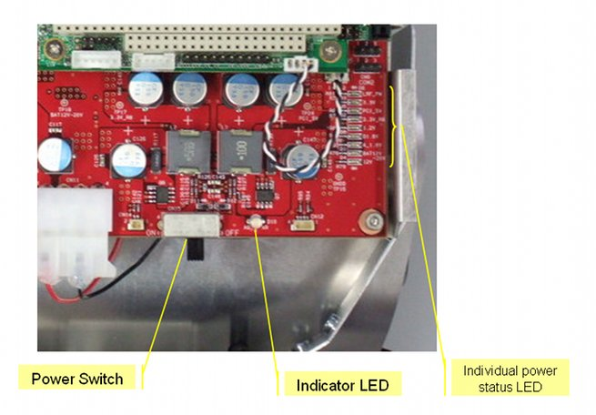
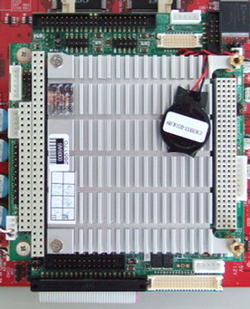
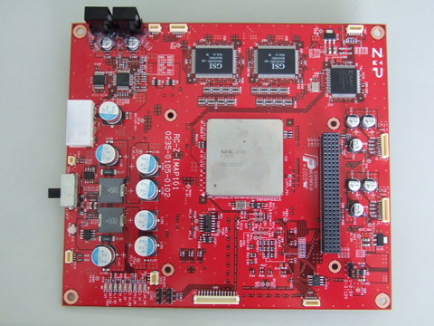
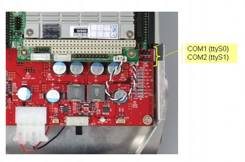

RoboCarは、アッパーシャーシ（情報系）と、ローワーシャーシ（駆動系）とに分かれます。 それぞれの系統に合わせ、2種類のバッテリーを使用します。
電池の交換などの際は、アッパーシャーシを開けます。
スイッチは電源スイッチのみが搭載されています。 駆動系の電源ON/OFF、移動などの操作は、すべてソフトウェアから行います。
情報系と駆動系とで使用するバッテリーが分かれています。
バッテリー、充電機ともに付属しています。専用のものを使用してください。
市販の乾電池（単三）を12本用意してください(別売です)。 SANYO ENELOOP を推奨します。 充電式の電池の場合、あらかじめ充電しておいてください。
長時間使用しないときはバッテリーを抜いておいてください。バッテリー寿命の低下や故障の原因となります。

図: スイッチ
RoboCarの電源を、ONまたはOFFにします。 情報系、駆動系ともに共通です。
情報系のバッテリー状態を表示します。 緑以外の状態になったら、バッテリーを新しい（または充電済みの）ものに交換してください。
RoboCarは、ソフトウェアにより内部の回路やデバイスへの 電源供給を個別に切り替えられます。 このLEDは電源の状態を表します。
RoboCarの制御をするためのCPUです。 PCアーキテクチャの小型ボードで、Linuxが動作します。

図: CPUボード
超並列画像処理プロセッサIMAPCARを搭載する 画像認識ボードです。 RoboCarすべての電源管理機能も持ちます。

図: IMAPボード (画像認識ボード)
ジャイロ、加速度センサ、ロータリーエンコーダ、赤外線測距センサなどセンサ情報の取得、
およびDCモータの回転、ステアリングなどの駆動制御を行います。
Linuxがbootします。 ユーザアプリケーション、RoboCarライブラリなどが、CF上のファイルシステムの上におかれます。
RoboCar搭載のLinuxにシリアルコンソールからログインすることができます。 ttyS0をシリアルコンソールに使用できます。
ttyS1は、RS485として、ステアリング用のサーボのコントロールに使用しています。 (CPUのジャンパ切り替えによって、ステアリングを使用しないときに、RS232Cポートとして 使用することもできます。)

図: COM port (RS232C)
無線通信ができます。無線通信を使用する場合、付属の無線LANアダプタを あらかじめ装着しておきます。
付属のコネクタにより、LANケーブルを接続することができます。
4つのUSBコネクタがあります。 無線LAN、 レーザーレンジファインダを使用する場合はこれを1つずつ利用します。